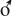
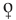
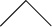

56
Sophie uzunca bir süre Teabing’e baktıktan sonra Langdon’a döndü. “Kutsal Kâse bir insan mı?”
Langdon başını salladı. “Aslında bir kadın.” Langdon, Sophie’nin yüzündeki boş ifadeden onun iyice koptuğunu anladı. İlk duyduğunda kendisi de benzer bir tepki vermişti. Kâse’nin ardındaki sembolik anlamı kavradıktan sonra kadın bağlantısı daha açık görülüyordu.
Teabing de aynı şekilde düşünüyordu. “Robert, belki de artık simgebilimcinin açıklama yapma zamanı gelmiştir, ne dersin?” Yakındaki bir masadan aldığı kâğıdı Langdon’ın önüne koydu.
Langdon cebinden bir kalem çıkardı. “Sophie, çağdaş dişi ve erkek sembollerini biliyor musun?” Bilindik erkek sembolü ve dişi sembolünü  çizdi.
Sophie, “Elbette,” dedi.
Alçak bir sesle, “Bunlar,” dedi. “Orijinal erkek ve dişi sembolleri değiller. Pek çokları erkek sembolünün kalkan ve mızraktan, dişi sembolünün ise güzelliği yansıtan bir aynadan geldiği yanılgısına düşer. Doğrusu semboller, tanrı gezegen Mars ve tanrıça gezegen Venüs için kullanılan eski astronomi sembollerinden gelir. İlk semboller çok daha basitti.” Langdon kâğıda bir başka ikona çizdi.

Ona, “Bu sembol, erkek için çizilen orijinal ikonadır,” dedi. “Gelişmemiş bir penis.”
Sophie, “Tam isabet,” dedi.
Teabing, “Sanki,” diye ekledi.
Langdon devam etti. “Bu ikona bıçak ağzı olarak bilinir ve saldırganlıkla erkekliği temsil eder. Doğrusunu istersen bu penis sembolü günümüzdeki askeri üniformalarda rütbe nişanı olarak hâlâ kullanılıyor.”
“Gerçekten.” Teabing sırıtıyordu. “Ne kadar çok penisin varsa, rütben o kadar yüksektir. Erkekler erkektir.”
Langdon yüzünü buruşturdu. “Devam edecek olursak, dişi sembolü tahmin edeceğin gibi tam tersidir.” Kâğıda başka bir sembol çizdi. “Buna kadeh denilir.”
Başını kaldırıp bakan Sophie şaşkın görünüyordu.
Langdon onun bağlantıyı anladığını görebiliyordu. “Kadeh,” dedi. “Bir kâseye ya da tasa benzer ya da daha önemlisi kadın rahmini andırır. Bu sembol dişilik, kadınlık ve doğurganlıkla ilgilidir.” Langdon şimdi doğruca ona bakıyordu. “Sophie, efsane bize Kutsal Kâse’nin bir kadeh olduğunu söylüyor... bir tas. Ama Kâse’nin kadeh olarak tasvir edilmesi, Kutsal Kâse’nin asıl yapısını korumak için uydurulmuş bir alegoriydi. Yani, efsanede kadeh, çok daha önemli bir şeyin mecazı olarak kullanılıyor.”
Sophie, “Bir kadın,” dedi.
“Kesinlikle.” Langdon gülümsüyordu. “Kâse aslında eski bir kadınlık sembolüdür. Kutsal Kâse kutsal dişiyi ve elbette şimdi kilise tarafından tamamen yok edilmiş olan tanrıçayı temsil eder. Kadının gücü ve onun hayat verebilme yetisi bir zamanlar kutsaldı ama erkek egemen kilisenin yükselişine tehdit oluşturuyordu. Bu yüzden kutsal dişi şeytanlaştırıldı ve ona günahkâr dendi. Havva’nın elmayı yiyerek insan ırkını çöküşe uğrattığı ‘ilk günah’ kavramını yaratan Tanrı değil, insandı. Bir zamanlar hayat veren kutsal kadın artık düşman olmuştu.”
Teabing, “Şunu eklemeliyim ki,” dedi. “Kadının hayat vermesi kavramı ilk dinin temelini atmıştır. Çocuk doğumu mistik ve güçlü bir şeydi. Ne yazık ki Hıristiyan felsefesi biyolojik gerçeği görmezden gelerek kadının yaratıcı gücünü zimmetine geçirmiş ve Yaratıcı’yı erkek ilan etmiştir. Başlangıç’ta bize Havva’nın Adem’in kaburgasından yaratıldığı anlatılır. Kadınlar erkeklerin bir yan ürünü olmuştu. Ve ayrıca günahkâr. Başlangıç, tanrıça için sonun başlangıcı olmuştu.”
Langdon, “Kâse,” dedi. “Kayıp tanrıçanın sembolüdür. Hıristiyanlık ortaya çıktığında, eski pagan dinleri hemen yok olmadı. Kayıp Kâse’yi arayan şövalye efsaneleri, aslında kayıp kutsal dişinin arandığını anlatan yasak hikâyelerdi. ‘Kadehi aradığını’ iddia eden şövalyeler, kadınlara boyun eğdiren, tanrıçaları dışlayan, inanmayanları yakan ve paganların kutsal dişiye saygı göstermesini yasaklayan bir kiliseden korunmak için şifreli bir biçimde konuşuyorlardı.”
Sophie başını iki yana salladı. “Affedersiniz, Kutsal Kâse’nin bir kişi olduğunu söylediğinizde ben onu gerçek bir insan sanmıştım.”
Langdon, “Öyle,” dedi.
Heyecanla ayağa kalkmaya çalışan Teabing, “Ama herhangi bir kadın değil,” diye ağzından kaçırdı. “Taşıdığı sır öylesine güçlü ki, açıklandığında Hıristiyanlığı temelinden sarsmakla tehdit ediyor.”
Sophie duygularına kapılmış gibiydi. “Peki bu kadın tarihte tanınmış biri mi?”
“Oldukça.” Teabing koltuk değneklerini alarak, koridora yöneldi. “Ve eğer çalışmayı başka bir yerde sürdürebilirsek dostlarım, size onun Da Vinci’nin çizdiği resmini göstermekten şeref duyarım.”
İki oda ötedeki mutfakta uşak Rémy Legaludec sessizce bir televizyonun önünde duruyordu. Haber kanalı bir adamla bir kadının fotoğraflarını gösteriyordu... Rémy’nin az önce çay ikram ettiği iki kişiyi.